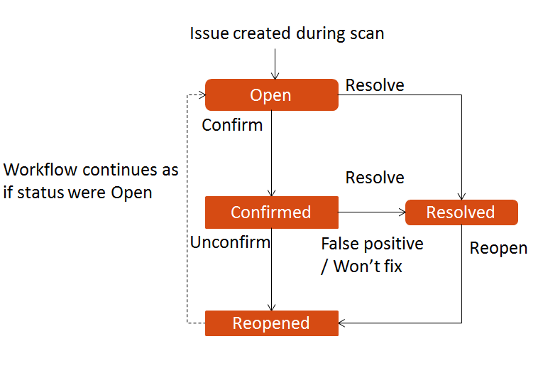

SonarQube version: 6.3+ - Date: February 2018
Main concepts
Quality Gates : Set of boolean conditions based on measure thresholds against which projects are measured during a period.
Blocker Issues equals 0
Code Coverage is greater than 80%
Rules: rules are executed on source to generate issues. Three basic types of rules: Reliability, Maintainability and Security
Rule definition:
- Language
- Type: bug, vulnerability, code smell
- Tag
- Repository
- Status: beta, deprecated, ready
Example:
".equals()" should not be used to test the values of "Atomic" classes
Language: Java
Type: bug
Tag: multi-threading
Repository: N/A
Status: ready
Quality profiles : Collections of rules to apply during an analysis. Each language has a default profile
Metric : A type of measurement. Examples: number of lines of code, number of duplicated blocks, complexity etc.
Reliability : code that can produce operational risks or unexpected behavior at runtime. Must of time it's the consequence of lack of compliance with best practice
Main concepts
Leak period : period (generally last release) in which newly added code is analysed against specified criteria.
Maintainability : modularity, understandability, changeability, testability and reusability of a module.
Issue : SonarQube raise an issue every time a piece of code breaks a code rule. Issue severities:
- BLOCKER: memory leak, not closing a socket... The code MUST be fixed immediately.
- CRITICAL: SQL Injection, NullPointerException: The code MUST be reviewed immediately.
- MAJOR: duplicated blocks, unused parameters
- MINOR: naming convention, lines too long,...
- INFO
Issue life cycle
Except Opened state, the others statuses can be set manually.It requires administer issues permission on the project
